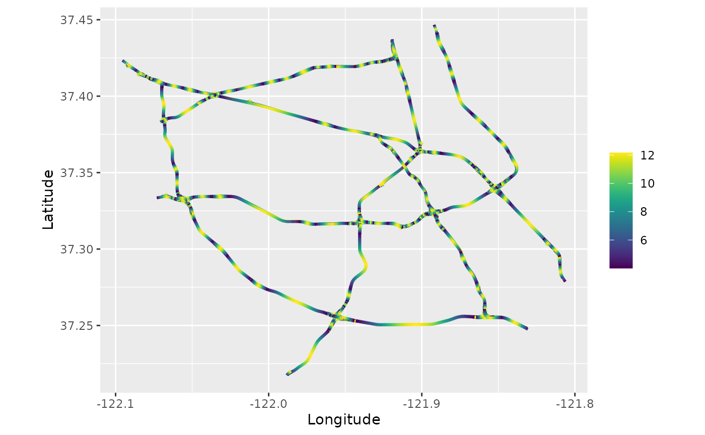
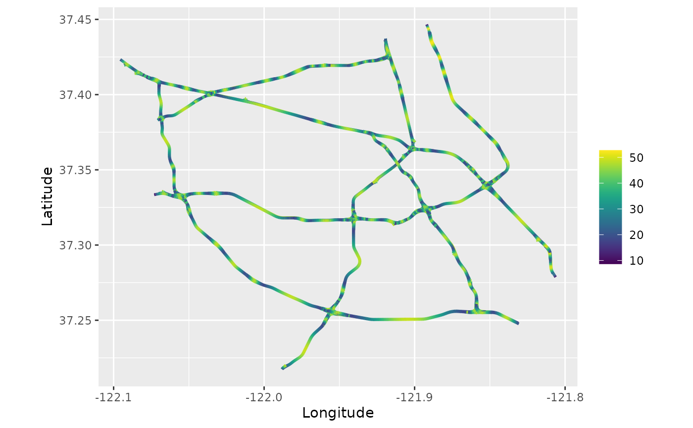

Whittle--Matérn fields with general smoothness
David Bolin, Alexandre B. Simas
Created: 2022-11-23. Last modified: 2023-10-30.
Source:vignettes/fem_models.Rmd
fem_models.RmdIntroduction
In this vignette we will introduce how to fit Whittle–Matérn fields
with general smoothness based on finite element and rational
approximations. The theory for this approach is provided in Bolin et
al. (2023) and Bolin,
Simas, and Xiong (2023). For the implementation, we make use
of the rSPDE
package for the rational approximations.
These models are thus implemented using finite element approximations. Such approximations are not needed in for integer smoothness parameters, and for the details about the exact models we refer to the vignettes
For details on the construction of metric graphs, see Working with metric graphs
For further details on data manipulation on metric graphs, see Data manipulation on metric graphs
Constructing the graph and the mesh
We begin by loading the rSPDE and
MetricGraph packages:
As an example, we consider the following metric graph
edge1 <- rbind(c(0,0),c(1,0))
edge2 <- rbind(c(0,0),c(0,1))
edge3 <- rbind(c(0,1),c(-1,1))
theta <- seq(from=pi,to=3*pi/2,length.out = 20)
edge4 <- cbind(sin(theta),1+ cos(theta))
edges = list(edge1, edge2, edge3, edge4)
graph <- metric_graph$new(edges = edges)
graph$plot()
To construct a FEM approximation of a Whittle–Matérn field with general smoothness, we must first construct a mesh on the graph.
graph$build_mesh(h = 0.5)
graph$plot(mesh=TRUE)
In the command build_mesh, the argument h
decides the largest spacing between nodes in the mesh. As can be seen in
the plot, the mesh is very coarse, so let’s reduce the value of
h and rebuild the mesh:
graph$build_mesh(h = 0.01)We are now ready to specify the model \[
(\kappa^2 - \Delta)^{\alpha/2} \tau u = \mathcal{W}
\] for the Whittle–Matérn field \(u\). For this, we use the
matern.operators function from the rSPDE
package:
sigma <- 1.3
range <- 0.15
nu <- 0.8
rspde.order <- 2
op <- matern.operators(nu = nu, range = range, sigma = sigma,
parameterization = "matern",
m = rspde.order, graph = graph) As can be seen in the code, we specify \(\kappa\) via the practical correlation
range \(\sqrt{8\nu}/\kappa\). Also, the
model is not parametrized by \(\tau,
\alpha\) but instead by \(\sigma,
\nu\). Here, sigma denotes the standard deviation of
the field and nu is the smoothness parameter, which is
related to \(\alpha\) via the relation
\(\alpha = \nu + 1/2\). The object
op_cov contains the matrices needed for evaluating the
distribution of the stochastic weights in the FEM approximation.
Let us simulate the field \(u\) at the mesh locations and plot the result:
u <- simulate(op)
graph$plot_function(X = u, plotly = TRUE)If we want to evaluate \(u(s)\) at
some locations \(s_1,\ldots, s_n\), we
need to multiply the weights with the FEM basis functions \(\varphi_i(s)\) evaluated at the locations.
For this, we can construct the observation matrix \(\boldsymbol{\mathrm{A}}\), with elements
\(A_{ij} = \varphi_j(s_i)\), which
links the FEM basis functions to the locations. This can be done by the
function fem_basis in the metric graph object. To
illustrate this, let us simulate some observation locations on the graph
and construct the matrix:
obs.per.edge <- 100
obs.loc <- NULL
for(i in 1:graph$nE) {
obs.loc <- rbind(obs.loc,
cbind(rep(i,obs.per.edge), runif(obs.per.edge)))
}
n.obs <- obs.per.edge*graph$nE
A <- graph$fem_basis(obs.loc)In the code, we generate \(50\) observation locations per edge in the graph, drawn at random. It can be noted that we assume that the observation locations are given in the format \((e, d)\) where \(e\) denotes the edge of the observation and \(d\) is the position on the edge, i.e., the relative distance from the first vertex of the edge.
To compute the precision matrix from the covariance-based rational
approximation one can use the precision() method on object
returned by the matern.operators() function:
Q <- precision(op)As an illustration of the model, let us compute the covariance
function between the process at \(s=(2,0.1)\), that is, the point at edge 2
and distance on edge 0.1, and all the other mesh points. To this end, we
can use the helper function cov_function_mesh that is
contained in the op object:
Using the model for inference
There is built-in support for computing log-likelihood functions and
performing kriging prediction in the rSPDE package which we
can use for the graph model. To illustrate this, we use the simulation
to create some noisy observations of the process. We generate the
observations as \(Y_i = 1 + 2x_{i1} - 3 x_{i2}
u(s_i) + \varepsilon_i\), where \(\varepsilon_i \sim N(0,\sigma_e^2)\) is
Gaussian measurement noise, \(x_1\) and
\(x_2\) are covariates generated the
relative positions of the observations on the graph.
sigma.e <- 0.1
x1 <- obs.loc[,1]
x2 <- obs.loc[,2]
Y <- 1 + 2*x1 - 3*x2 + as.vector(A %*% u + sigma.e * rnorm(n.obs))Let us now fit the model. To this end we will use the
graph_lme() function (that, for the finite element models,
acts as a wrapper for the rspde_lme() function from the
rSPDE package). To this end, let us now assemble the
data.frame() with the observations, the observation
locations and the covariates:
df_data <- data.frame(y = Y, edge_number = obs.loc[,1],
distance_on_edge = obs.loc[,2],
x1 = x1, x2 = x2)Let us now add the data to the graph object and plot it:
graph$add_observations(data = df_data, normalized = TRUE)
graph$plot(data = "y")
We can now fit the model. To this end, we use the
graph_lme() function and set the model to
'WM’.
fit <- graph_lme(y ~ x1 + x2, graph = graph, model = "WM")## Warning in rSPDE::rspde_lme(formula = formula, loc =
## cbind(df_data[[".edge_number"]], : optim method L-BFGS-B failed to provide a
## positive-definite Hessian. Another optimization method was used.Let us obtain a summary of the model:
summary(fit)##
## Latent model - Whittle-Matern
##
## Call:
## graph_lme(formula = y ~ x1 + x2, graph = graph, model = "WM")
##
## Fixed effects:
## Estimate Std.error z-value Pr(>|z|)
## (Intercept) 1.1342 0.6768 1.676 0.0938 .
## x1 1.9773 0.1879 10.524 < 2e-16 ***
## x2 -2.9377 0.7049 -4.167 3.08e-05 ***
##
## Random effects:
## Estimate Std.error z-value
## alpha 1.305517 0.018531 70.452
## tau 0.044937 0.004135 10.866
## kappa 17.839895 2.473788 7.212
##
## Random effects (Matern parameterization):
## Estimate Std.error z-value
## nu 0.80552 0.01853 43.469
## sigma 1.31867 0.12520 10.532
## range 0.14230 0.01913 7.438
##
## Measurement error:
## Estimate Std.error z-value
## std. dev 0.098714 0.006472 15.25
## ---
## Signif. codes: 0 '***' 0.001 '**' 0.01 '*' 0.05 '.' 0.1 ' ' 1
##
## Log-Likelihood: -127.6056
## Number of function calls by 'optim' = 501
## Optimization method used in 'optim' = Nelder-Mead
##
## Time used to: fit the model = 4.79648 secsWe can also obtain additional information by using the function
glance():
glance(fit)## # A tibble: 1 × 9
## nobs sigma logLik AIC BIC deviance df.residual model alpha
## <int> <dbl> <dbl> <dbl> <dbl> <dbl> <dbl> <chr> <dbl>
## 1 400 0.0987 -128. 269. 297. 255. 393 Covariance-Based M… 1.31Let us compare the values of the parameters of the latent model with the true ones:
print(data.frame(sigma = c(sigma, fit$matern_coeff$random_effects[2]),
range = c(range, fit$matern_coeff$random_effects[3]),
nu = c(nu, fit$matern_coeff$random_effects[1]),
row.names = c("Truth", "Estimates")))## sigma range nu
## Truth 1.300000 0.1500000 0.8000000
## Estimates 1.318671 0.1422951 0.8055167Kriging
Given that we have estimated the parameters, let us compute the kriging predictor of the field given the observations at the mesh nodes.
We will perform kriging with the predict() method. To
this end, we need to provide a data.frame containing the
prediction locations, as well as the values of the covariates at the
prediction locations.
df_pred <- data.frame(edge_number = graph$mesh$VtE[,1],
distance_on_edge = graph$mesh$VtE[,2],
x1 = graph$mesh$VtE[,1],
x2 = graph$mesh$VtE[,2])
u.krig <- predict(fit, newdata = df_pred, normalized = TRUE)The estimate is shown in the following figure
graph$plot_function(as.vector(u.krig$mean)) 
We can also use the augment() function to easily plot
the predictions. Let us a build a 3d plot now and add the observed
values on top of the predictions:
Fitting a model with replicates
Let us now illustrate how to simulate a data set with replicates and
then fit a model to such data. To simulate a latent model with
replicates, all we do is set the nsim argument to the
number of replicates.
n.rep <- 30
u.rep <- simulate(op, nsim = n.rep)Now, let us generate the observed values \(Y\):
Note that \(Y\) is a matrix with 20
columns, each column containing one replicate. We need to turn
y into a vector and create an auxiliary vector
repl indexing the replicates of y:
y_vec <- as.vector(Y.rep)
repl <- rep(1:n.rep, each = n.obs)
df_data_repl <- data.frame(y = y_vec,
edge_number = rep(obs.loc[,1], n.rep),
distance_on_edge = rep(obs.loc[,2], n.rep),
repl = repl)Let us clear the previous observations and add the new data to the graph:
graph$add_observations(data = df_data_repl, normalized = TRUE,
group = "repl", clear_obs = TRUE)We can now fit the model in the same way as before by using the
rspde_lme() function. Note that we can optimize in parallel
by setting parallel to TRUE. If we do not
specify which replicate to consider, in the which_repl
argument, all replicates will be considered.
fit_repl <- graph_lme(y ~ -1, graph = graph, model = "WM", parallel = TRUE)## Warning in rSPDE::rspde_lme(formula = formula, loc =
## cbind(df_data[[".edge_number"]], : The optimization failed to provide a
## numerically positive-definite Hessian. You can try to obtain a
## positive-definite Hessian by setting 'improve_hessian' to TRUE or by setting
## 'parallel' to FALSE, which allows other optimization methods to be used.## Warning in sqrt(diag(inv_fisher)): NaNs producedObserve that we have received a warning saying that the Hessian was
not positive-definite, which ended up creating NaNs for the
standard errors. Indeed, let us see a summary of the fit:
summary(fit_repl)##
## Latent model - Whittle-Matern
##
## Call:
## graph_lme(formula = y ~ -1, graph = graph, model = "WM", parallel = TRUE)##
## No fixed effects.##
## Random effects:
## Estimate Std.error z-value
## alpha 1.27825 NaN NaN
## tau 0.05488 NaN NaN
## kappa 15.41109 0.43363 35.54
##
## Random effects (Matern parameterization):
## Estimate Std.error z-value
## nu 0.778250 NaN NaN
## sigma 1.323369 0.025319 52.27
## range 0.161909 0.004915 32.94
##
## Measurement error:
## Estimate Std.error z-value
## std. dev 0.300957 0.002944 102.2
## ---
## Signif. codes: 0 '***' 0.001 '**' 0.01 '*' 0.05 '.' 0.1 ' ' 1
##
## Log-Likelihood: -9741.75
## Number of function calls by 'optim' = 85
## Optimization method used in 'optim' = L-BFGS-B
##
## Time used to: fit the model = 11.51848 secs
## set up the parallelization = 5.76996 secsLet us, then, follow the suggestion from the warning and refit the
model setting improve_hessian to TRUE. This
will obtain a more precise estimate of the Hessian, which can possibly
fix this issue:
fit_repl <- graph_lme(y ~ -1, graph = graph, model = "WM",
parallel = TRUE, improve_hessian = TRUE)We see that we did not receive any warning now, and the Std. errors were computed accordingly:
summary(fit_repl)##
## Latent model - Whittle-Matern
##
## Call:
## graph_lme(formula = y ~ -1, graph = graph, model = "WM", parallel = TRUE,
## improve_hessian = TRUE)##
## No fixed effects.##
## Random effects:
## Estimate Std.error z-value
## alpha 1.27825 0.05174 24.704
## tau 0.05488 0.01246 4.405
## kappa 15.41109 1.41291 10.907
##
## Random effects (Matern parameterization):
## Estimate Std.error z-value
## nu 0.778250 0.051742 15.04
## sigma 1.323369 0.025320 52.27
## range 0.161909 0.004915 32.94
##
## Measurement error:
## Estimate Std.error z-value
## std. dev 0.300957 0.003395 88.65
## ---
## Signif. codes: 0 '***' 0.001 '**' 0.01 '*' 0.05 '.' 0.1 ' ' 1
##
## Log-Likelihood: -9741.75
## Number of function calls by 'optim' = 85
## Optimization method used in 'optim' = L-BFGS-B
##
## Time used to: fit the model = 10.67391 secs
## compute the Hessian = 6.49329 secs
## set up the parallelization = 5.46799 secsLet us also take a glance of the fit:
glance(fit_repl)## # A tibble: 1 × 9
## nobs sigma logLik AIC BIC deviance df.residual model alpha
## <int> <dbl> <dbl> <dbl> <dbl> <dbl> <dbl> <chr> <dbl>
## 1 12000 0.301 -9742. 19491. 19521. 19483. 11996 Covariance-Based … 1.28Let us compare the values of the parameters of the latent model with the true ones:
print(data.frame(sigma = c(sigma, fit_repl$matern_coeff$random_effects[2]),
range = c(range, fit_repl$matern_coeff$random_effects[3]),
nu = c(nu, fit_repl$matern_coeff$random_effects[1]),
row.names = c("Truth", "Estimates")))## sigma range nu
## Truth 1.300000 0.1500000 0.80000
## Estimates 1.323369 0.1619091 0.77825Let us do kriging. We will use the same prediction locations as in the previous example. Let us get prediction for replicate 10, then add the original observations on top of them:
Using the R-INLA implementation
We also have an R-INLA implementation of the rational
SPDE approach for metric graphs.
We begin by defining the model by using the
rspde.metric_graph() function. This function contains the
same arguments as the function rspde.matern(). We refer the
reader to the R-INLA
implementation of the rational SPDE approach vignette for further
details.
We begin by clearing the previous observations and adding the observations (for the case without replicates) to the graph:
graph$clear_observations()
graph$add_observations(data = df_data, normalized = TRUE)Let us create the model object:
library(INLA)
rspde_model <- rspde.metric_graph(graph)By default, the order of the rational approximation is 2.
We can now create the auxiliary quantities that will be needed with
the graph_data_rspde() function:
data_rspde <- graph_data_rspde(rspde_model, name = "field")The remaining is standard: we create the formula object, the stack
object, and then fit the model by using the inla()
function. So, first we create the formula object:
f.s <- y ~ -1 + Intercept + x1 + x2 + f(field, model = rspde_model)Now we create the inla.stack object. To such an end,
observe that data_rspde contains the dataset as the
data component, the index as the index
component and the so-called A matrix as the
basis component. We will now create the stack using these
components:
stk.dat <- inla.stack(
data = data_rspde[["data"]]["y"], A = list(data_rspde[["basis"]],1), tag = "est",
effects =
list(c(
data_rspde[["index"]],
list(Intercept = 1)), list(x1 = data_rspde[["data"]]["x1"] ,
x2 = data_rspde[["data"]]["x2"])
)
)Finally, we can fit the model:
rspde_fit <- inla(f.s, data = inla.stack.data(stk.dat),
control.inla = list(int.strategy = "eb"),
control.predictor = list(A = inla.stack.A(stk.dat), compute = TRUE)
)We can use the same functions as the rspde fitted models
in inla. For instance, we can see the results in the
original scale by creating the result object:
result_fit <- rspde.result(rspde_fit, "field", rspde_model)
summary(result_fit)## mean sd 0.025quant 0.5quant 0.975quant mode
## std.dev 1.422890 0.1536410 1.148900 1.413020 1.751700 1.392170
## range 0.171719 0.0365798 0.110599 0.168135 0.253732 0.160974
## nu 0.753844 0.0944775 0.577631 0.750610 0.947470 0.743000Let us compare with the true values:
result_df <- data.frame(
parameter = c("std.dev", "range", "nu"),
true = c(sigma, range, nu),
mean = c(
result_fit$summary.std.dev$mean,
result_fit$summary.range$mean,
result_fit$summary.nu$mean
),
mode = c(
result_fit$summary.std.dev$mode,
result_fit$summary.range$mode,
result_fit$summary.nu$mode
)
)
print(result_df)## parameter true mean mode
## 1 std.dev 1.30 1.4228919 1.3921748
## 2 range 0.15 0.1717193 0.1609736
## 3 nu 0.80 0.7538440 0.7429998We can also plot the posterior marginal densities with the help of
the gg_df() function:
posterior_df_fit <- gg_df(result_fit)
library(ggplot2)
ggplot(posterior_df_fit) + geom_line(aes(x = x, y = y)) +
facet_wrap(~parameter, scales = "free") + labs(y = "Density")
Kriging with the R-INLA implementation
We will do kriging on the mesh locations:
pred_loc <- graph$mesh$VtELet us now add the observations for prediction:
graph$add_observations(data = data.frame(y=rep(NA,nrow(pred_loc)),
x1 = graph$mesh$VtE[,1],
x2 = graph$mesh$VtE[,2],
edge_number = pred_loc[,1],
distance_on_edge = pred_loc[,2]),
normalized = TRUE)Let us now create a new model and, then, compute the auxiliary
components at the prediction locations. To this end, we set the argument
only_pred to TRUE, in which it will return the
data.frame containing the NA data.
rspde_model_prd <- rspde.metric_graph(graph)
data_rspde_prd <- graph_data_rspde(rspde_model_prd, only_pred = TRUE)Let us build the prediction stack using the components of
data_rspde_prd and gather it with the estimation stack.
ef.prd <-
list(c(data_rspde_prd[["index"]], list(Intercept = 1)),
list(x1 = data_rspde_prd[["data"]][["x1"]],
x2 = data_rspde_prd[["data"]][["x2"]]))
stk.prd <- inla.stack(
data = data.frame(y = data_rspde_prd[["data"]][["y"]]),
A = list(data_rspde_prd[["basis"]],1), tag = "prd",
effects = ef.prd
)
stk.all <- inla.stack(stk.dat, stk.prd)Let us obtain the predictions:
rspde_fitprd <- inla(f.s,
data = inla.stack.data(stk.all),
control.predictor = list(
A = inla.stack.A(stk.all),
compute = TRUE, link = 1
),
control.compute = list(
return.marginals = FALSE,
return.marginals.predictor = FALSE
),
control.inla = list(int.strategy = "eb")
)Let us now extract the indices of the predicted nodes and store the means:
id.prd <- inla.stack.index(stk.all, "prd")$data
m.prd <- rspde_fitprd$summary.fitted.values$mean[id.prd]Finally, let us plot the predicted values. To this end we will use
the plot_function() graph method.
graph$plot_function(m.prd, plotly = TRUE) Using R-INLA implementation to fit models with
replicates
Let us begin by cloning the graph and clearing the observations on the cloned graph:
graph_rep <- graph$clone()
graph_rep$clear_observations()We will now add the data with replicates to the graph:
graph_rep$add_observations(data = data.frame(y=as.vector(Y.rep),
edge_number = rep(obs.loc[,1], n.rep),
distance_on_edge = rep(obs.loc[,2], n.rep),
repl = rep(1:n.rep, each = n.obs)),
group = "repl",
normalized = TRUE)Let us create a new rspde model object:
rspde_model_rep <- rspde.metric_graph(graph_rep)To fit the model with replicates we need to create the auxiliary
quantities with the graph_data_rspde() function, where we
set the repl argument in the function
graph_data_spde to .all since we want to use
all replicates:
data_rspde_rep <- graph_data_rspde(rspde_model_rep, name = "field", repl = ".all")Let us now create the corresponding inla.stack
object:
st.dat.rep <- inla.stack(
data = data_rspde_rep[["data"]],
A = data_rspde_rep[["basis"]],
effects = data_rspde_rep[["index"]]
)Observe that we need the response variable y to be a
vector. We can now create the formula object, remembering
that since we gave the name argument field, when creating
the index, we need to pass field.repl to the
formula:
f.rep <-
y ~ -1 + f(field,
model = rspde_model_rep,
replicate = field.repl
)We can, finally, fit the model:
rspde_fit_rep <-
inla(f.rep,
data = inla.stack.data(st.dat.rep),
family = "gaussian",
control.predictor =
list(A = inla.stack.A(st.dat.rep))
)We can obtain the estimates in the original scale with the
rspde.result() function:
result_fit_rep <- rspde.result(rspde_fit_rep, "field", rspde_model_rep)
summary(result_fit_rep)## mean sd 0.025quant 0.5quant 0.975quant mode
## std.dev 1.337860 0.03152800 1.269240 1.341100 1.390940 1.353590
## range 0.174412 0.00716233 0.159043 0.175042 0.186715 0.177524
## nu 0.729762 0.02390090 0.689765 0.727190 0.782391 0.718913Let us compare with the true values of the parameters:
result_rep_df <- data.frame(
parameter = c("std.dev", "range", "nu"),
true = c(sigma, range, nu),
mean = c(
result_fit_rep$summary.std.dev$mean,
result_fit_rep$summary.range$mean,
result_fit_rep$summary.nu$mean
),
mode = c(
result_fit_rep$summary.std.dev$mode,
result_fit_rep$summary.range$mode,
result_fit_rep$summary.nu$mode
)
)
print(result_rep_df)## parameter true mean mode
## 1 std.dev 1.30 1.3378645 1.3535922
## 2 range 0.15 0.1744124 0.1775244
## 3 nu 0.80 0.7297616 0.7189132We can also plot the posterior marginal densities with the help of
the gg_df() function:
posterior_df_fit_rep <- gg_df(result_fit_rep)
ggplot(posterior_df_fit_rep) + geom_line(aes(x = x, y = y)) +
facet_wrap(~parameter, scales = "free") + labs(y = "Density")
Using inlabru implementation
The inlabru package allows us to fit models and do
kriging in a straighforward manner, without having to handle
A matrices, indices nor inla.stack objects.
Therefore, we suggest the reader to use this implementation when using
our implementation to fit real data.
Let us clear the graph, since it contains NA
observations we used for prediction, add the observations again, and
create a new rSPDE model object:
graph$clear_observations()
graph$add_observations(data = df_data,
normalized = TRUE)
rspde_model <- rspde.metric_graph(graph)Let us now load the inlabru package and create the
component (which is inlabru’s formula-like object). Since
we are using the data from the graph, inlabru will also
obtain the locations from the graph, thus, there is no need to provide
the locations. However, we need a name for the locations for using
inlabru’s predict method. Therefore, we can choose any name
for the location that is not a name being used in the graph’s data. In
our case we will use the name loc:
## Loading required package: fmesher
cmp <-
y ~ -1 + Intercept(1) + x1 + x2 + field(loc,
model = rspde_model) Let us now build the auxiliary data to be used with the
graph_data_rspde() function, where we pass the name of the
location variable in the above formula as the loc_name
argument, which in this case is "loc":
data_rspde_bru <- graph_data_rspde(rspde_model, loc_name = "loc")Now, we can directly fit the model of the
graph_data_spde() function:
Let us now obtain the estimates of the parameters in the original
scale by using the rspde.result() function:
result_bru_fit <- rspde.result(rspde_bru_fit, "field", rspde_model)
summary(result_bru_fit)## mean sd 0.025quant 0.5quant 0.975quant mode
## std.dev 1.425090 0.1563420 1.153600 1.412060 1.766290 1.381050
## range 0.171276 0.0373658 0.109825 0.167188 0.256011 0.159207
## nu 0.756657 0.0984779 0.572999 0.753309 0.958393 0.745491Let us compare with the true values of the parameters:
result_bru_df <- data.frame(
parameter = c("std.dev", "range", "nu"),
true = c(sigma, range, nu),
mean = c(
result_bru_fit$summary.std.dev$mean,
result_bru_fit$summary.range$mean,
result_bru_fit$summary.nu$mean
),
mode = c(
result_bru_fit$summary.std.dev$mode,
result_bru_fit$summary.range$mode,
result_bru_fit$summary.nu$mode
)
)
print(result_bru_df)## parameter true mean mode
## 1 std.dev 1.30 1.4250859 1.3810468
## 2 range 0.15 0.1712763 0.1592068
## 3 nu 0.80 0.7566567 0.7454912We can also plot the posterior marginal densities with the help of
the gg_df() function:
posterior_df_bru_fit <- gg_df(result_bru_fit)
ggplot(posterior_df_bru_fit) + geom_line(aes(x = x, y = y)) +
facet_wrap(~parameter, scales = "free") + labs(y = "Density")
Kriging with the inlabru implementation
It is very easy to do kriging with the inlabru
implementation. We simply need to provide the prediction locations to
the predict() method.
In this example we will use the mesh locations. To this end we will
use the get_mesh_locations() method. We also set
bru=TRUE and loc="loc" to obtain a data list
suitable to be used with inlabru.
data_prd_list <- graph$get_mesh_locations(bru = TRUE,
loc = "loc")
data_prd_list[["x1"]] <- data_prd_list$loc[,1]
data_prd_list[["x2"]] <- data_prd_list$loc[,2]Now, we can simply provide these locations to the
predict method along with the fitted object
rspde_bru_fit:
y_pred <- predict(rspde_model, cmp, rspde_bru_fit, newdata=data_prd_list, ~Intercept + x1 + x2 + field)Finally, let us plot the predicted values. To this end we will use
the plot() method on y_pred:
plot(y_pred) 
We can also create the 3d plot, together with the true data:
p <- graph$plot(data = "y", plotly=TRUE)
plot(y_pred, plotly = TRUE, p = p)Using inlabru to fit models with replicates
We can also use our inlabru implementation to fit models
with replicates. We will consider the same data that was generated
above, where the number of replicates is 30.
For this implementation we will use the rspde_model_rep
object.
We can now create the component, passing the vector with the indices
of the replicates as the replicate argument. To obtain the
auxiliary data, we will pass repl argument we use the
function graph_data_rspde(), where we set it to
.all, since we want all replicates. Further, we also pass
the loc_name argument.
data_rspde_rep <- graph_data_rspde(rspde_model_rep, repl = ".all", loc_name = "loc")We can now define the bru component formula, passing the
repl as the replicate argument:
cmp_rep <-
y ~ -1 + field(loc, model = rspde_model_rep,
replicate = repl)Now, we are ready to fit the model:
rspde_bru_fit_rep <-
bru(cmp_rep,
data=data_rspde_rep[["data"]],
options=list(
family = "gaussian")
)We can obtain the estimates in the original scale with the
rspde.result() function:
result_bru_fit_rep <- rspde.result(rspde_bru_fit_rep, "field", rspde_model_rep)
summary(result_bru_fit_rep)## mean sd 0.025quant 0.5quant 0.975quant mode
## std.dev 1.337730 0.03145410 1.269290 1.340950 1.390720 1.353330
## range 0.174460 0.00719574 0.159017 0.175093 0.186816 0.177596
## nu 0.729817 0.02400610 0.689653 0.727232 0.782685 0.718919Let us compare with the true values of the parameters:
result_bru_rep_df <- data.frame(
parameter = c("std.dev", "range", "nu"),
true = c(sigma, range, nu),
mean = c(
result_bru_fit_rep$summary.std.dev$mean,
result_bru_fit_rep$summary.range$mean,
result_bru_fit_rep$summary.nu$mean
),
mode = c(
result_bru_fit_rep$summary.std.dev$mode,
result_bru_fit_rep$summary.range$mode,
result_bru_fit_rep$summary.nu$mode
)
)
print(result_bru_rep_df)## parameter true mean mode
## 1 std.dev 1.30 1.3377318 1.3533337
## 2 range 0.15 0.1744600 0.1775965
## 3 nu 0.80 0.7298175 0.7189188We can also plot the posterior marginal densities with the help of
the gg_df() function:
posterior_df_bru_fit_rep <- gg_df(result_bru_fit_rep)
ggplot(posterior_df_bru_fit_rep) + geom_line(aes(x = x, y = y)) +
facet_wrap(~parameter, scales = "free") + labs(y = "Density")
Let us now do prediction for observations of replicate
10. We start by building the data list with the prediction
locations:
data_prd_list_repl <- graph$get_mesh_locations(bru = TRUE,
loc = "loc")
data_prd_list_repl[["repl"]] <- rep(10, nrow(data_prd_list$loc))Let us now obtain predictions for this replicate:
y_pred <- predict(rspde_model_rep, cmp_rep, rspde_bru_fit_rep,
newdata=data_prd_list_repl, ~field_eval(loc, replicate = repl))We can now plot the predictions along with the observed values for
replicate 10:
p <- plot(y_pred, plotly=TRUE)
graph_rep$plot(data = "y", group = 10, plotly=TRUE, p = p)An example with a non-stationary model
Our goal now is to show how one can fit model with non-stationary \(\sigma\) (std. deviation) and non-stationary \(\rho\) (a range parameter). One can also use the parameterization in terms of non-stationary SPDE parameters \(\kappa\) and \(\tau\).
We follow the same structure as INLA. However,
INLA only allows one to specify B.tau and
B.kappa matrices, and, in INLA, if one wants
to parameterize in terms of range and standard deviation one needs to do
it manually. Here we provide the option to directly provide the matrices
B.sigma and B.range.
The usage of the matrices B.tau and B.kappa
are identical to the corresponding ones in
inla.spde2.matern() function. The matrices
B.sigma and B.range work in the same way, but
they parameterize the stardard deviation and range, respectively.
The columns of the B matrices correspond to the same
parameter. The first column does not have any parameter to be estimated,
it is a constant column.
So, for instance, if one wants to share a parameter with both
sigma and range (or with both tau
and kappa), one simply let the corresponding column to be
nonzero on both B.sigma and B.range (or on
B.tau and B.kappa).
Creating the graph and adding data
For this example we will consider the pems data
contained in the MetricGraph package. The data consists of
traffic speed observations on highways in the city of San Jose,
California. The variable y contains the traffic speeds.
pems_graph <- metric_graph$new(edges = pems$edges, longlat=TRUE)
df_data_pems = data.frame(y = pems$Y, edge_number = pems$PtE[,1], distance_on_edge = pems$PtE[,2])
pems_graph$add_observations(data = df_data_pems, normalized=TRUE)
pems_graph$prune_vertices()
pems_graph$build_mesh(h=0.1)The summary of this graph:
summary(pems_graph)## A metric graph object with:
##
## Vertices:
## Total: 347
## Degree 1: 11; Degree 2: 16; Degree 3: 315; Degree 4: 5;
## With incompatible directions: 17
##
## Edges:
## Total: 504
## Lengths:
## Min: 0.01040218 ; Max: 7.677232 ; Total: 470.7559
## Weights:
## Min: 1 ; Max: 1
## That are circles: 0
##
## Graph units:
## Vertices unit: degrees ; Lengths unit: km
##
## Longitude and Latitude coordinates: TRUE
## Which spatial package: sp
## CRS: +proj=longlat +datum=WGS84 +no_defs
##
## Some characteristics of the graph:
## Connected: TRUE
## Has loops: FALSE
## Has multiple edges: TRUE
## Is a tree: FALSE
## Distance consistent: FALSE
## Has Euclidean edges: FALSE
##
## Computed quantities inside the graph:
## Laplacian: FALSE ; Geodesic distances: TRUE
## Resistance distances: FALSE ; Finite element matrices: FALSE
##
## Mesh:
## Max h_e: 0.09998277 ; Min n_e: 0
##
## Data:
## Columns: y
## Groups: None
##
## Tolerances:
## vertex-vertex: 1e-07
## vertex-edge: 1e-07
## edge-edge: 0Observe that it is a non-Euclidean graph.
Let us create as non-stationary covariates, the position on the edge, which will capture if the traffic speed was taken close to the intersections. We will apply the sine function so that we have the same behavior at the beginning and end of the edges.
cov_pos <- sin(pems_graph$mesh$VtE[,2] * pi)We will now build the non-stationary matrices to be used:
Fitting the model with graph_lme
We are now in position to fit this model using the
graph_lme() function:
fit <- graph_lme(y ~ 1, graph = pems_graph, model = list(type = "WhittleMatern",
B.sigma = B.sigma, B.range = B.range, fem = TRUE), improve_hessian = TRUE)## Warning in rSPDE::rspde_lme(formula = formula, loc =
## cbind(df_data[[".edge_number"]], : optim method L-BFGS-B failed to provide a
## positive-definite Hessian. Another optimization method was used.Let us now obtain a summary of the fitted model:
summary(fit)##
## Latent model - Generalized Whittle-Matern
##
## Call:
## graph_lme(formula = y ~ 1, graph = pems_graph, model = list(type = "WhittleMatern",
## B.sigma = B.sigma, B.range = B.range, fem = TRUE), improve_hessian = TRUE)
##
## Fixed effects:
## Estimate Std.error z-value Pr(>|z|)
## (Intercept) 49.865 3.047 16.36 <2e-16 ***
##
## Random effects:
## Estimate Std.error z-value
## alpha 2.0285 0.1094 18.538
## Theta 1 2.0788 1.2724 1.634
## Theta 2 1.3878 1.0196 1.361
## Theta 3 1.1100 3.4971 0.317
##
## Measurement error:
## Estimate Std.error z-value
## std. dev 1.95681 0.05646 34.66
## ---
## Signif. codes: 0 '***' 0.001 '**' 0.01 '*' 0.05 '.' 0.1 ' ' 1
##
## Log-Likelihood: -1209.895
## Number of function calls by 'optim' = 451
## Optimization method used in 'optim' = Nelder-Mead
##
## Time used to: fit the model = 9.07549 secs
## compute the Hessian = 4.63538 secsLet us plot the range parameter along the mesh, so we can see how it is varying:
est_range <- exp(B.range[,-1]%*%fit$coeff$random_effects[2:4])
pems_graph$plot_function(X = est_range, vertex_size = 0)
Similarly, we have for sigma:
est_sigma <- exp(B.sigma[,-1]%*%fit$coeff$random_effects[2:4])
pems_graph$plot_function(X = est_sigma, vertex_size = 0)Our goal now is to plot the estimated marginal standard deviation of
this model. To this end, we start by creating the non-stationary Matérn
operator using the rSPDE package:
rspde_object_ns <- rSPDE::spde.matern.operators(graph = pems_graph,
parameterization = "matern",
B.sigma = B.sigma,
B.range = B.range,
theta = fit$coeff$random_effects[2:4],
nu = fit$coeff$random_effects[1] - 0.5)Now, we compute the estimated marginal standard deviation:
We can now plot:
pems_graph$plot_function(X = est_std_dev, vertex_size = 0)
Fitting the inlabru rSPDE model
Let us then fit the same model using inlabru now. We
start by defing the rSPDE model with the
rspde.metric_graph() function:
rspde_model_nonstat <- rspde.metric_graph(pems_graph,
B.sigma = B.sigma,
B.range = B.range,
parameterization = "matern") Let us now create the data.frame() and the vector with
the replicates indexes:
data_rspde_bru_ns <- graph_data_rspde(rspde_model_nonstat, loc_name = "loc")Let us create the component and fit.
cmp_nonstat <-
y ~ -1 + Intercept(1) + field(loc,
model = rspde_model_nonstat
)
rspde_fit_nonstat <-
bru(cmp_nonstat,
data = data_rspde_bru_ns[["data"]],
family = "gaussian",
options = list(verbose = FALSE)
)We can get the summary:
summary(rspde_fit_nonstat)## inlabru version: 2.10.0
## INLA version: 23.05.30-1
## Components:
## Intercept: main = linear(1), group = exchangeable(1L), replicate = iid(1L)
## field: main = cgeneric(loc), group = exchangeable(1L), replicate = iid(1L)
## Likelihoods:
## Family: 'gaussian'
## Data class: 'metric_graph_data', 'list'
## Predictor: y ~ .
## Time used:
## Pre = 0.183, Running = 59, Post = 0.237, Total = 59.4
## Fixed effects:
## mean sd 0.025quant 0.5quant 0.975quant mode kld
## Intercept 50.902 2.751 45.369 50.926 56.296 50.924 0
##
## Random effects:
## Name Model
## field CGeneric
##
## Model hyperparameters:
## mean sd 0.025quant 0.5quant
## Precision for the Gaussian observations 0.020 0.002 0.016 0.020
## Theta1 for field 3.071 0.497 2.342 2.997
## Theta2 for field 1.855 0.300 1.356 1.829
## Theta3 for field -0.070 1.014 -2.430 0.088
## Theta4 for field 0.748 0.414 0.058 0.712
## 0.975quant mode
## Precision for the Gaussian observations 0.025 0.020
## Theta1 for field 4.223 2.661
## Theta2 for field 2.518 1.703
## Theta3 for field 1.392 0.794
## Theta4 for field 1.663 0.539
##
## Deviance Information Criterion (DIC) ...............: 2299.93
## Deviance Information Criterion (DIC, saturated) ....: 436.15
## Effective number of parameters .....................: 106.28
##
## Watanabe-Akaike information criterion (WAIC) ...: 2295.09
## Effective number of parameters .................: 82.76
##
## Marginal log-Likelihood: -1237.08
## is computed
## Posterior summaries for the linear predictor and the fitted values are computed
## (Posterior marginals needs also 'control.compute=list(return.marginals.predictor=TRUE)')We can obtain outputs with respect to parameters in the original
scale by using the function rspde.result():
result_fit_nonstat <- rspde.result(rspde_fit_nonstat, "field", rspde_model_nonstat)
summary(result_fit_nonstat)## mean sd 0.025quant 0.5quant 0.975quant mode
## Theta1.matern 3.0710000 0.497200 2.34165 2.9970800 4.22280 2.660540
## Theta2.matern 1.8554400 0.299921 1.35595 1.8291500 2.51800 1.703190
## Theta3.matern -0.0704974 1.013730 -2.42999 0.0884776 1.39179 0.793877
## nu 1.3438800 0.170401 1.03018 1.3373200 1.67854 1.287400We can also plot the posterior densities. To this end we will use the
gg_df() function, which creates ggplot2
user-friendly data frames:
posterior_df_fit <- gg_df(result_fit_nonstat)
ggplot(posterior_df_fit) + geom_line(aes(x = x, y = y)) +
facet_wrap(~parameter, scales = "free") + labs(y = "Density")